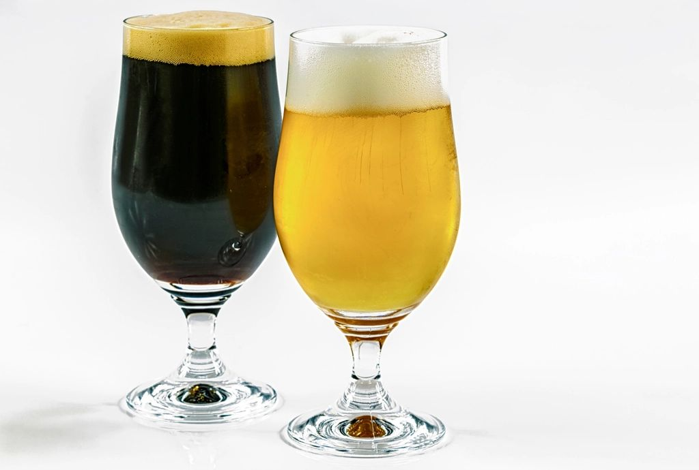

ढाँचाअनलाइन
अवधि8 हप्ता
सेसनहरू16 लाइभ, हरेक 2 घण्टा
ब्याचबढीमा 20
शुल्क₹18,999

यो कसका लागि हो
के यो तपाईंका लागि हो?
- फराकिलो पोर्टफोलियो चाहने ब्रुअरहरू
- प्रतियोगितामा brew गर्नेहरू र भावी judge हरू
- Cicerone को तयारी गर्दै गरेका बियर शिक्षक र सर्भरहरू
अन्त्यसम्ममा
तपाईंले लिएर जाने कुराहरू।
- Style sheet पढेर त्यसैअनुसार brew गर्नुहोस्
- Lager देखि sour सम्म, सात style परिवार सोचेबुझेर brew गर्नुहोस्
- स्टाइलसँग मिल्ने सामग्री छान्नुहोस्
- प्रतियोगिताको बियरलाई अङ्क दिनुहोस् र दर्ता गर्नुहोस्
तपाईंका प्रशिक्षक र सम्पर्क व्यक्ति
यो कोर्स कसले पढाउँछ र कसलाई सोध्ने।

पाठ्यक्रम
हप्ता-हप्ता।
8 हप्ता। हरेक सप्ताहान्त दुईवटा लाइभ सेसन र हप्तामा एउटा गृहकार्य।
हप्ता 01. स्टाइलहरू कसरी काम गर्छन्
- BJCP र Brewers Association का निर्देशिकाहरू
- Style sheet पढ्ने तरिका: OG, FG, IBU, रङ र ABV का दायराहरू
- इतिहास, पानी र करले स्टाइलहरूलाई कसरी आकार दिए
गृहकार्य: आफूले रोजेको एउटा स्टाइलको प्रोफाइल त्यसको guideline सँग दाँजेर बनाउनुहोस्।
हप्ता 02. Lager हरू
- Helles, Pilsner, Märzen र Dunkel
- चिसो fermentation, diacetyl rest र lagering
असाइनमेन्ट: पूरा fermentation तालिकासहित एउटा Pilsner recipe लेख्नुहोस्।
हप्ता 03. Wheat beer हरू
- Hefeweizen र witbier
- Ferulic acid rest, ल्वाङ र केरा
- धनियाँ र सुन्तलाको बोक्रा, नबढाईकन
असाइनमेन्ट: एउटा wheat beer डिजाइन गर्नुहोस् र हरेक मसला र यीस्टको छनोटको कारण दिनुहोस्।
हप्ता 04. British ale
- Bitter, mild र porter
- अंग्रेजी यीस्ट, crystal malt र cask conditioning
गृहकार्य: 4% ABV भन्दा कममा पनि body भएको best bitter बनाउनुहोस्।
हप्ता 05. IPA हरू
- English, West Coast र New England
- Hop schedule र dry hopping
- अक्सिजन, haze र hop creep
गृहकार्य: एउटै base malt बाट दुई IPA recipe लेख्नुहोस्।
हप्ता 06. Stout र गाढा बियर
- Dry, sweet र imperial stout
- भुटेको जौ, कफी र चकलेट
- Nitro dispense
असाइनमेन्ट: एउटा stout बनाउनुहोस् र त्यसलाई कसरी सर्भ गर्ने योजना बनाउनुहोस्।
हप्ता 07. Belgian ale
- Saison, dubbel र tripel
- न्यानो fermentation, phenol र candi sugar
असाइनमेन्ट: saison फर्मेन्टेसन योजना लेख्नुहोस् र त्यसको स्वादको अनुमान गर्नुहोस्।
हप्ता 08. Sour र प्रतियोगिताका लागि brewing
- Kettle sour र mixed fermentation
- जजिङ पाना र बियरलाई कसरी अंक दिइन्छ
- प्रतियोगिता छान्ने र त्यसमा भाग लिने
असाइनमेन्ट: प्रतियोगिताको brew योजना बुझाउनुहोस् र त्यसमा प्रतिक्रिया पाउनुहोस्।
यो कसरी चल्छ
ढाँचा र सर्तहरू।
- तालिका
- शनिबार र आइतबार live, दिउँसो 12:00 देखि 2:00 बजेसम्म IST। Cohort सँगको आपसी सहमतिमा समय सर्न सक्छ।
- Batch को आकार
- बढीमा 20 विद्यार्थी, त्यसैले हरेक प्रश्नको जवाफ पाइन्छ।
- समावेश
- सत्रका रेकर्डिङ, प्रस्तुति स्लाइड, साप्ताहिक असाइनमेन्ट र सिकाइ किट।
- प्रमाणपत्र
- सबै असाइनमेन्ट बुझाएपछि र कम्तीमा 80% लाइभ सत्रमा उपस्थित भएपछि Certificate of Completion।
- स्क्रिनभन्दा पर
- सिफारिस गरिएका माइक्रोब्रुअरी भ्रमण, ताकि तपाईंले पढिरहेका उपकरण आफ्नै आँखाले देख्नुहोस्।
- शुल्क
- साइन-अप गर्दा पूरै भुक्तानी। कुनै छुट लागू हुँदैन। पुष्टि भएपछि कोर्सको प्याकेज बदल्न मिल्दैन।
पूरा फ्लाइट चाहनुहुन्छ? 29 वटै कोर्स सँगै 75 हप्ता लाग्छ। दर्ता गर्दा तपाईंले आफ्नो प्याकेज छान्नुहुन्छ। 29 वटै कोर्स तुलना गर्नुहोस् र पैसा तिर्नुअघि रिफन्ड नीति पढ्नुहोस्।
पढ्न सुझाइएका
यो कोर्सका सबै गाइडहरू।
यो कोर्सले समेट्ने विषयमा 124 निःशुल्क गाइड। पहिलो सत्रअघि जुनसुकै पढ्नुहोस्।
सन्दर्भ: बियर स्टाइल पुस्तकालय · Brewing malt गाइड · Hop का जातहरूको गाइड
स्टाइलहरू 70
- जापानदेखि थाइल्यान्ड र भारतसम्म एसियाका rice lager को तुलना
- Belgian table beer र लामो session का लागि बनेको कम कडा स्टाइल
- BJCP र Brewers Association का स्टाइल गाइडलाइनको तुलना
- Black IPA को इतिहास र कडा roast बिना यसलाई कसरी ब्रु गर्ने
- खोजेर पिउन लायक क्रिसमस र नयाँ वर्षका बियर
- Czech dark र amber lager र तिनीहरू German lager भन्दा कसरी फरक छन्
- Belgian dubbel वा quadrupel: कडापन, रङ र स्वाद
- Eisbock को व्याख्या: जमाएर बनाइने strong lager
- English golden ale: बेलायती पबहरूको गर्मीको pale ale
- Festbier कि Marzen? Oktoberfest मा आज वास्तवमा के पस्किन्छ
- तातो हावापानीका लागि foreign extra stout र tropical stout
- Grisette: गर्मी मौसमका लागि बनेको हल्का farmhouse ale
- Grodziskie: पोल्यान्डको हल्का smoked wheat beer
- Gruit: हप आउनुअघि ब्रु गरिने जडीबुटीको बियर
- Brewpub को पहिलो wheat beer का लागि hefeweizen वा witbier
- भारतीय brewpub को house beer का लागि कुन lager style छान्ने
- नयाँ बियर स्टाइल style guidelines मा कसरी थपिन्छ
- India pale lager: भारतीय पिउनेहरूका लागि hoppy lager बनाउने
- Italian pilsner र dry-hopped lager को उदय
- Kellerbier र zwickelbier: फिल्टर नगरिएका lager को व्याख्या
- तपाईंको ट्याप लिस्टको हल्का ale का लागि Kolsch कि blonde ale
- कम alcohol भएको craft beer: के हेर्ने
- Mexican-style lager र यो तातो भारतीय दिउँसोलाई किन सुहाउँछ
- Milkshake IPA लाई अति गुलियो होइन, सन्तुलित राख्ने
- Pastry stout र डेजर्ट बियर, अनि ब्रुअरले तिनलाई कसरी बनाउँछन्
- Pilsner कि Helles: दुई फिक्का जर्मन lager कसरी फरक छन्
- Kveik सँग pseudo-lager: के यो असली जस्तै लाग्छ?
- Red IPA र rye IPA: दुई hybrid IPA र तिनीहरू कसरी फरक छन्
- Sahti: juniper सँग ब्रु गरिने फिनल्यान्डको farmhouse बियर
- Saison वा farmhouse ale: यी दुई लेबलको साँचो अर्थ
- सुरुआतीहरूका लागि sour beer
- तातो भारतीय गर्मीमा पनि बिक्ने stout brew गर्ने
- भारतको जाडोका लागि न्यानो पार्ने बियर
- भारतीय धनिया र नागपुरे सुन्तलासँग witbier ब्रु गर्ने
- आँप, अम्बा र बुरांस: Gagan Deep का tap मा भएका फलफूलका बियर
- Rauchbier र smoked beer
- Barleywine
- Flanders red ale
- Lambic र gueuze
- Belgian strong dark ale
- Belgian tripel
- Belgian dubbel
- Saison
- Amber र red ale
- Pale ale
- Session IPA
- Double IPA
- English IPA
- New England IPA
- West Coast IPA
- Milk stout र oatmeal stout
- Imperial stout
- Dry stout
- Porter
- English brown ale
- English mild
- English bitter
- Altbier
- Kölsch
- Gose
- Berliner weisse
- Witbier
- Hefeweizen
- American light lager
- Dunkel र schwarzbier
- Bock र doppelbock
- Vienna lager
- Märzen र Oktoberfest बियर
- Munich Helles
- Pilsner: style गाइड
ब्रुइङका आधारभूत कुरा 31
- घरमै Belgian blonde ale बनाउने
- Hot alcohol स्वादबिना घरमै Belgian tripel बनाउने
- Lager पिउने साथीहरूका लागि blonde ale बनाउने
- साबुत मसलाले घरमै chai spiced porter बनाउने
- Cold brew कफीले घरमै coffee stout बनाउने
- घरमै cream ale बनाउने
- घरमै Czech pale lager बनाउने
- नुन र धनियाँले घरमै gose बनाउने
- घरमै hoppy lager बनाउने
- मनसुनमा घरमै जामुनको fruit beer बनाउने
- Flaked maize ले घरमै Mexican-style lager बनाउने
- घरमै Munich dunkel बनाउने
- भारतीय फर्सीले घरमै pumpkin ale बनाउने
- घरमै rye pale ale बनाउने
- घरमै Scottish export ale बनाउने
- घरमै सानो batch मा barleywine बनाउने
- घरमै smoked porter बनाउने
- घरमै Vienna lager बनाउने
- सफा र सुक्खा finish सहित घरमै West Coast IPA बनाउने
- घरमै altbier बनाउने
- Goldings hops ले घरमै English IPA बनाउने
- घरमै imperial stout बनाउने र त्यसलाई पर्खने
- घरमै Irish red ale बनाउने
- घरमै oatmeal stout बनाउने
- धनियाँ र सुन्तलाको बोक्रासहित घरमै Belgian witbier brew गर्ने
- खैरो नहुने गरी घरमै hazy IPA ब्रु गर्ने
- Lager फ्रिज बिना घरमै Kolsch-style ale brew गर्ने
- सानो चुलोमा घरमै robust porter ब्रु गर्ने
- गर्मी मौसममा घरमै saison बनाउने
- Crystal malt सँग घरमै amber ale बनाउने
- सजिलै पिउन घरमै English bitter बनाउने
सामग्री 20
- बियरमा कालो मरिच र पिपला
- भारतमा barrel-aged stout का लागि bourbon barrel
- बियरमा खजूरको सिरप र palm sugar
- बियरमा अम्बा
- बियरमा कटहर
- बियरमा कागती पात र लेमनग्रास
- बियरमा लिची
- बियरमा भुइँकटहर
- बियरमा केशर
- Gose भन्दा पर बियरमा नुन
- आधुनिक lager का लागि noble चारबाहेकका जर्मन हप जातहरू
- एउटा hop मा आँपको र अर्कोमा pine को गन्ध किन आउँछ
- भारतीय मसलासँग brewing
- बियरमा फल हाल्ने
- Brettanomyces बुझौँ
- न्युजिल्यान्ड र अस्ट्रेलियाका hop
- American hops को गाइड
- Noble hops र युरोपेली क्लासिकहरू
- बियरमा जई (oats): body, haze र रेशमी चिल्लोपन
- Roasted malt: chocolate, black र roasted barley
Style Specialisation मा आफ्नो सिट सुरक्षित गर्नुहोस्।
हरेक समूहमा बढीमा 20 जना। अहिले नै भर्ना हुनुहोस् वा WhatsApp मा सोध्नुहोस्।